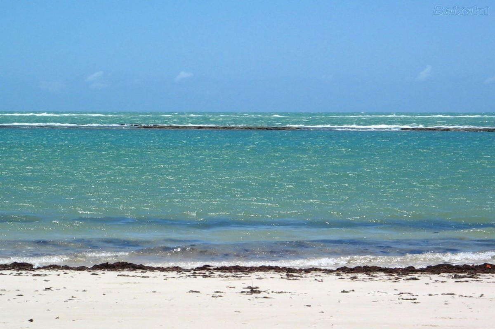

PRAIAS
Praias de Marechal Deodoro
Quando se fala em Marechal Deodoro e em praia, definitivamente a primeira e maisconhecida praia que vem à cabeça é a do Francês. Muito frequentada por surfistas, a praiado Francês possui um mar para todos os gostos: trechos de calmaria, guardados por umabarreira de corais que quebra as ondas ainda em alto mar, e trechos de ondas maisagitadas, ideais para a prática de esportes aquáticos dos mais variados tipos. Além da praiado Francês, Marechal conta ainda com a praia de Barra Nova e com a praia do saco, menos frequentadas e conhecidas, mas igualmente belas.
Praia do Francês
Praia do Saco
Massagueira
Praia do Francês
Praia do Francês
Praia do Francês
Praias da Barra de São Miguel
Conhecida por um Carnaval animado, a barra de São Miguel conta com três praias: praia daBarra de São Miguel, localizada numa região chamada Barra mar, praia do Niquim, assimchamada pela proximidade com o rio Niquim (que, em determinados trechos, deságua nomar), e a praia das Conchas, certamente a menos famosa das três, localizada no centro daBarra de São Miguel, numa região mais conhecida como Cais de São Pedro.O final de tarde na praia das Conchas é algo que por si só já valeria a visita, junto com acalmaria que a praia oferece.
Barra Mar
Barra Mar
Barra Mar

Praias de Maceió
Em Maceió, a capital de Alagoas, as atrações principais e mais visitadas são as praias de Pajuçara, Ponta Verde e Jatiúca. Elas contam com uma orla completa e bem estruturada para receber turistas de vários lugares do mundo, com vários pontos de parada"instagramáveis". Na Pajuçara, é possível, ainda, conhecer um pouco do artesanato local, lá na feirinha/Pavilhão do artesanato. Maceió possui muitas outras praias, um pouco mais afastadas do centro e que também não deixam a desejar no quesito "beleza". É o caso das praias de Garça Torta, Mirante da Sereia e Ipioca, por exemplo.
Praia da Ponta Verde

Praia da Pajuçara

Praia da Jatiúca

Praia da Avenida
Praia da Avenida
Jequia da Praia
Das belezas de Jequiá, uma das mais badaladas são as Dunas de Marapé. Há várias opções de excursões que levam os turistas até as Dunas de Jequiá, geralmente saindo da Capital e percorrendo as praias mais famosas do Litoral Sul. Além das Dunas de Marapé, Jequiá possui a praia de Lagoa Azeda e Barra de Jequiá, ambas paraísos naturais quase que intocados pelo homem.
Dunas de Marapé
Dunas de Marapé
Praia da Barra de Jequia